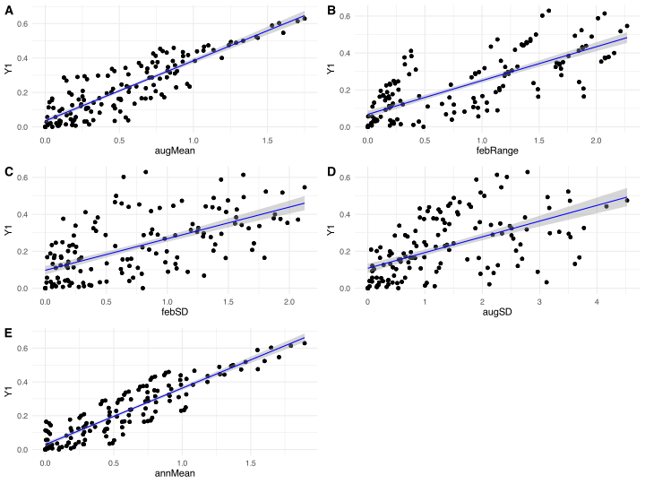
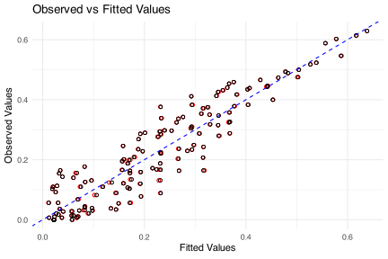

14. Multiple Linear Regression (MLR)
![]()
X dist bio augMean febRange febSD augSD annMean
1 1 0.000 BMP 0.00000000 0.00000000 0.00000000 0.0000000 0.00000000
2 2 51.138 BMP 0.05741369 0.09884404 0.16295271 0.3132800 0.01501846
3 3 104.443 BMP 0.15043904 0.34887754 0.09934163 0.4188239 0.02602247
968 3362 102.649 ECTZ 0.41496099 0.11330069 0.24304493 0.7538546 0.52278161
969 3363 49.912 ECTZ 0.17194242 0.05756093 0.18196664 0.3604341 0.24445006
970 3364 0.000 ECTZ 0.00000000 0.00000000 0.00000000 0.0000000 0.00000000
Y Y1 Y2
1 0.000000000 0.0000000 0.000000000
2 0.003610108 0.0000000 0.003610108
3 0.003610108 0.0000000 0.003610108
968 0.198728140 0.1948882 0.003839961
969 0.069337442 0.0443038 0.025033645
970 0.000000000 0.0000000 0.000000000We will do a multiple linear regression (MLR) analysis to understand the relationship between the environmental variables and the seaweed species. Specifically, we will consider only the variables augMean, febRange, febSD, augSD, and annMean as predictors of the species composition as measured by \(\beta_\text{sør}\) (Y in the data file; Y1 and Y2 are \(\beta_\text{sim}\)) and \(\beta_\text{sne}\), respectively).
First, let’s look at this relationship in the East Coast Transition Zone ECTZ, ignoring the other bioregions. Since we are now doing a formal inferential statistical test, we need to consider hypotheses again.
For \(\beta_\text{sør}\) (Y):
Null Hypothesis (\(H_0\)): There is no linear relationship between the environmental variables (augMean, febRange, febSD, augSD, and annMean) and the community composition as measured by \(\beta_\text{sør}\). Formally, for each predictor variable \(X_i\):
\[H_0: \beta_i = 0 \text{ for } i = 1, 2, 3, 4, 5\]
Where \(\beta_i\) are the coefficients of the predictors in the multiple linear regression model.
Alternative Hypothesis (\(H_A\)): There is a linear relationship between at least one of the environmental variables and the species composition as measured by \(\beta_\text{sør}\):
\[H_A: \exists \, \beta_i \neq 0 \text{ for at least one } i\] This translates into the following model:
seaweed_ectz <- seaweed |>
filter(bio == "ECTZ")
# multiple linear regression
# Fit the full and null models
full_model <- lm(Y1 ~ augMean + febRange + febSD + augSD + annMean, data = seaweed_ectz)
null_model <- lm(Y1 ~ 1, data = seaweed_ectz) # used later for model selection
summary(full_model)
Call:
lm(formula = Y1 ~ augMean + febRange + febSD + augSD + annMean,
data = seaweed_ectz)
Residuals:
Min 1Q Median 3Q Max
-0.154356 -0.041796 -0.008445 0.041764 0.144647
Coefficients:
Estimate Std. Error t value Pr(>|t|)
(Intercept) 0.022821 0.006706 3.403 0.000762 ***
augMean -0.086906 0.045331 -1.917 0.056227 .
febRange 0.123990 0.016959 7.311 2.73e-12 ***
febSD -0.066121 0.017603 -3.756 0.000209 ***
augSD -0.001920 0.005196 -0.370 0.711976
annMean 0.333008 0.044252 7.525 7.04e-13 ***
---
Signif. codes: 0 '***' 0.001 '**' 0.01 '*' 0.05 '.' 0.1 ' ' 1
Residual standard error: 0.06075 on 283 degrees of freedom
Multiple R-squared: 0.8685, Adjusted R-squared: 0.8662
F-statistic: 373.9 on 5 and 283 DF, p-value: < 2.2e-16# Add fitted values from the model to the dataframe
seaweed_ectz$.fitted <- fitted(full_model)
# Create a function to generate plots for each predictor
plot_predictor <- function(data, predictor) {
ggplot(data, aes_string(x = predictor, y = "Y1")) +
geom_point() +
geom_smooth(method = "lm", formula = y ~ x,
col = "blue", size = 0.5) +
labs(x = predictor,
y = "Y1") +
theme_minimal()
}
# List of predictors
predictors <- c("augMean", "febRange", "febSD", "augSD", "annMean")
# Generate and print plots for each predictor
plots <- lapply(predictors, plot_predictor, data = seaweed_ectz)
ggpubr::ggarrange(plotlist = plots, ncol = 2, nrow = 3, labels = "AUTO")
# Perform forward selection
selected_model <- stepAIC(null_model, scope = list(lower = null_model, upper = full_model), direction = "forward")Start: AIC=-1036.71
Y1 ~ 1
Df Sum of Sq RSS AIC
+ annMean 1 6.5375 1.4053 -1535.3
+ augMean 1 6.1343 1.8085 -1462.4
+ febRange 1 4.6443 3.2985 -1288.7
+ febSD 1 3.0571 4.8856 -1175.2
+ augSD 1 2.4789 5.4639 -1142.8
<none> 7.9428 -1036.7
Step: AIC=-1535.26
Y1 ~ annMean
Df Sum of Sq RSS AIC
+ febRange 1 0.303715 1.1016 -1603.6
+ febSD 1 0.160509 1.2448 -1568.3
<none> 1.4053 -1535.3
+ augSD 1 0.009343 1.3960 -1535.2
+ augMean 1 0.000704 1.4046 -1533.4
Step: AIC=-1603.63
Y1 ~ annMean + febRange
Df Sum of Sq RSS AIC
+ febSD 1 0.041990 1.0596 -1612.9
<none> 1.1016 -1603.6
+ augSD 1 0.001245 1.1003 -1602.0
+ augMean 1 0.000995 1.1006 -1601.9
Step: AIC=-1612.86
Y1 ~ annMean + febRange + febSD
Df Sum of Sq RSS AIC
+ augMean 1 0.0148464 1.0448 -1614.9
<none> 1.0596 -1612.9
+ augSD 1 0.0017883 1.0578 -1611.3
Step: AIC=-1614.94
Y1 ~ annMean + febRange + febSD + augMean
Df Sum of Sq RSS AIC
<none> 1.0448 -1614.9
+ augSD 1 0.000504 1.0443 -1613.1
Call:
lm(formula = Y1 ~ annMean + febRange + febSD + augMean, data = seaweed_ectz)
Residuals:
Min 1Q Median 3Q Max
-0.152057 -0.042409 -0.008629 0.042481 0.144037
Coefficients:
Estimate Std. Error t value Pr(>|t|)
(Intercept) 0.021995 0.006313 3.484 0.000572 ***
annMean 0.323293 0.035544 9.096 < 2e-16 ***
febRange 0.124237 0.016920 7.342 2.22e-12 ***
febSD -0.067315 0.017278 -3.896 0.000122 ***
augMean -0.078429 0.039040 -2.009 0.045493 *
---
Signif. codes: 0 '***' 0.001 '**' 0.01 '*' 0.05 '.' 0.1 ' ' 1
Residual standard error: 0.06065 on 284 degrees of freedom
Multiple R-squared: 0.8685, Adjusted R-squared: 0.8666
F-statistic: 468.8 on 4 and 284 DF, p-value: < 2.2e-16# Add fitted values from the selected model to the dataframe
seaweed_ectz$.fitted_selected <- fitted(selected_model)
# Create the plot of observed vs fitted values for the selected model
observed_vs_fitted_selected <- ggplot(seaweed_ectz, aes(x = .fitted_selected, y = Y1)) +
geom_point(aes(x = .fitted), colour = "red", shape = 1) +
geom_point(shape = 1) +
geom_abline(intercept = 0, slope = 1, color = "blue", linetype = "dashed") +
labs(title = "Observed vs Fitted Values",
x = "Fitted Values",
y = "Observed Values") +
theme_minimal()
# Print the plot
print(observed_vs_fitted_selected)
Reuse
Citation
@online{smit2024,
author = {Smit, AJ},
title = {14. {Multiple} {Linear} {Regression} {(MLR)}},
date = {2024-06-25},
url = {http://tangledbank.netlify.app/BCB743/14-multiple-regression.html},
langid = {en}
}